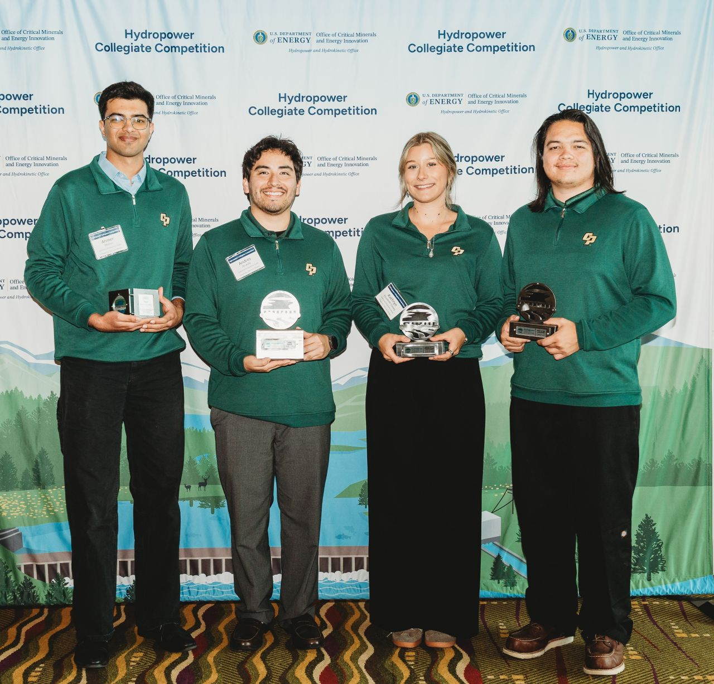

DOE Competition · Hydropower
2025 – 2026
🏆 1st Place Overall · 1st Place Build & Test · 1st Place Community Connections
Cross-Flow Turbine — DOE Hydropower Collegiate Competition
Led a team of 4 to design, build, and test a 1:5 scale cross-flow (Banki) turbine model targeting ~133 kW full-scale shaft power at 73% efficiency. Used hydraulic similitude laws and EES thermodynamic modeling throughout the design process. Conducted site feasibility analysis from SCADA pressure and flow data (4–31 cfs, 79–148 ft head) at a municipal pressure-reducing station. Developed test procedures with a Prony brake dynamometer, turbine flow meter, and pressure transducers; built Python data reduction tools to generate power and efficiency curves and scale model-to-prototype projections.
